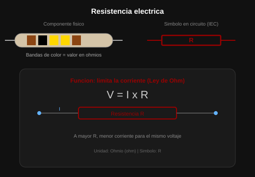
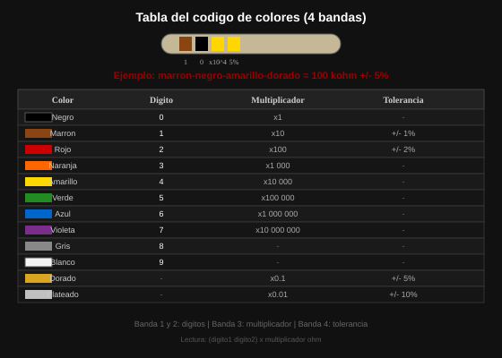
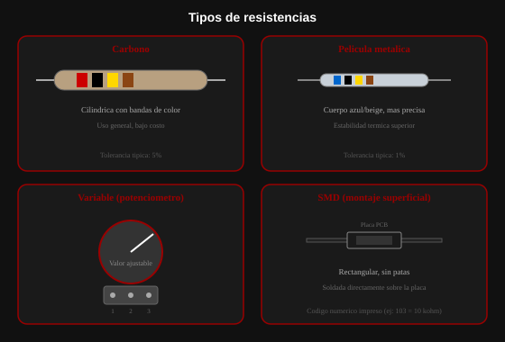
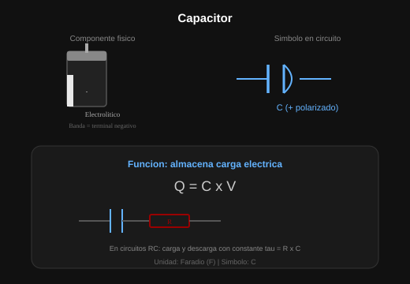
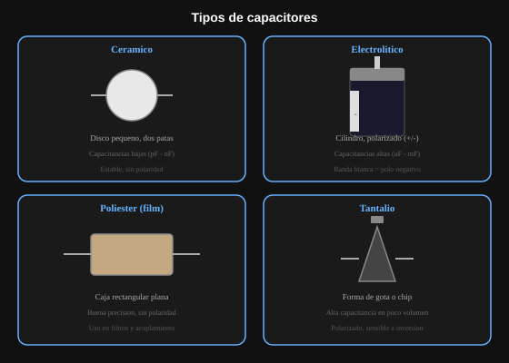

Resistencias
¿Qué son?
Las resistencias son componentes electrónicos que limitan el paso de la corriente eléctrica. Se utilizan para proteger circuitos, dividir voltajes y controlar la intensidad de corriente.
1 / 5
Las resistencias son componentes electrónicos que limitan el paso de la corriente eléctrica. Se utilizan para proteger circuitos, dividir voltajes y controlar la intensidad de corriente.

Las bandas de colores permiten identificar el valor de una resistencia. Cada color representa un número, multiplicador o tolerancia.

Existen resistencias de carbón, película metálica, variables y SMD. Cada una se utiliza dependiendo de la precisión y aplicación del circuito.

Los capacitores almacenan energía eléctrica temporalmente. Son esenciales en filtros, temporizadores y circuitos RC.

Los capacitores pueden ser cerámicos, electrolíticos, de poliéster o tántalo. Cada tipo posee propiedades distintas de almacenamiento y estabilidad.
